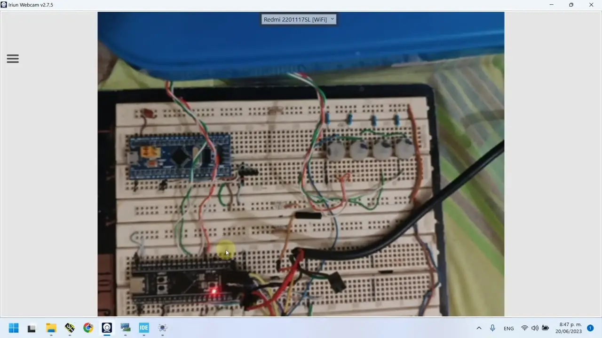
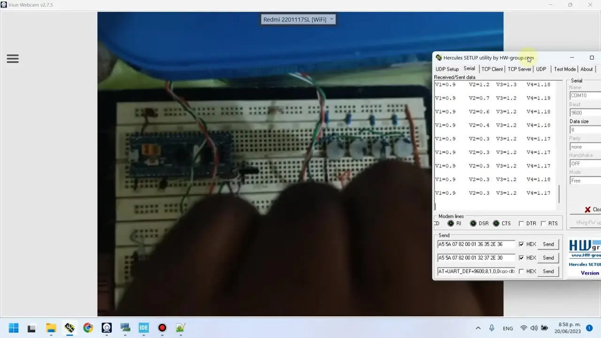
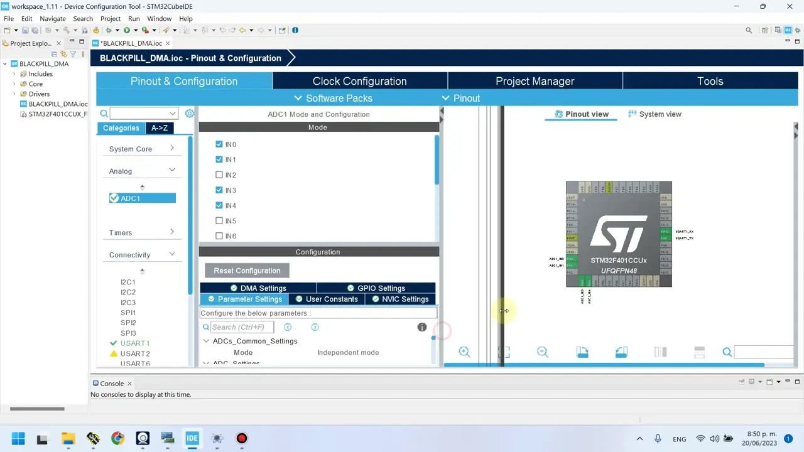
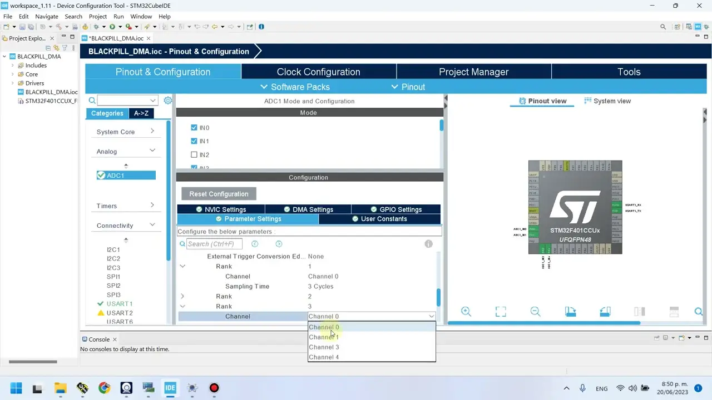
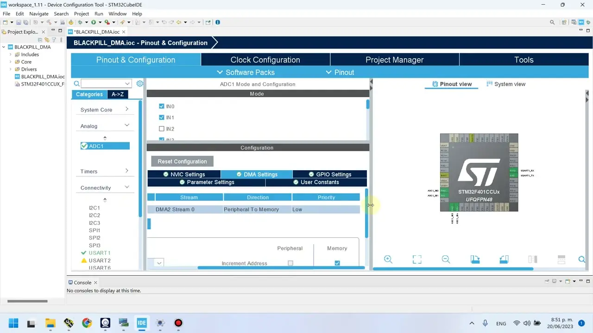
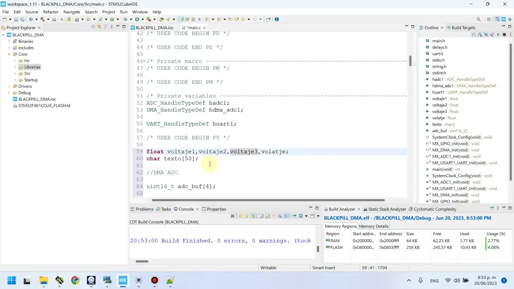
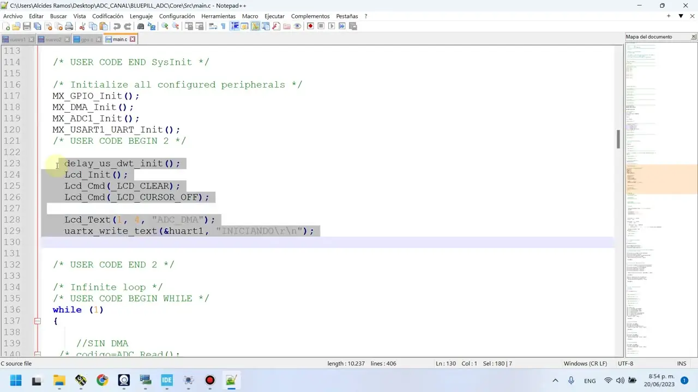
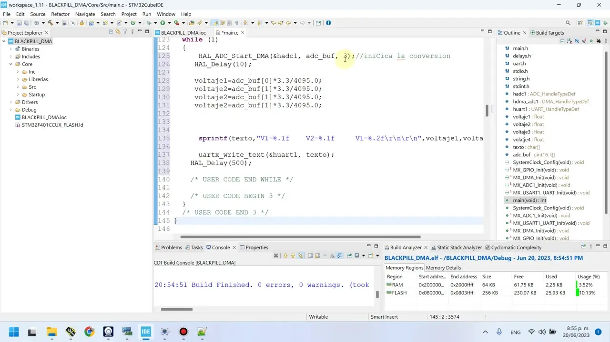
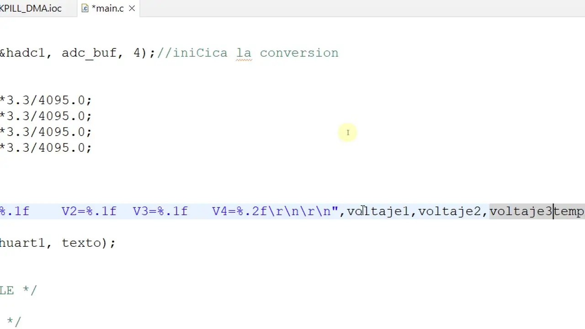
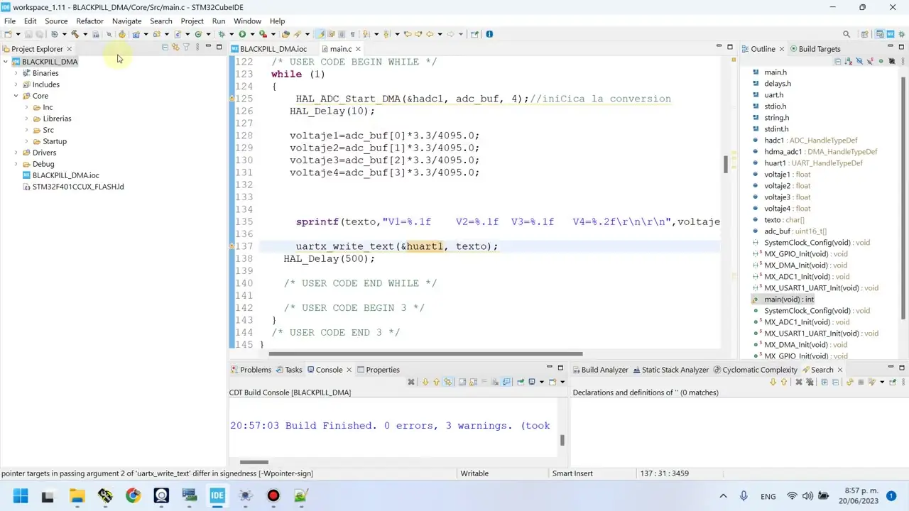

Cuatro potenciómetros a las entradas analógicas de la Black Pill y un adaptador USB-serial en la USART1.

Para usar DMA con el ADC basta con: canales en modo scan con su Rank, DMA circular de periférico a memoria en media palabra, un buffer de 16 bits y HAL_ADC_Start_DMA. En la Black Pill se leen cuatro canales (IN0, IN1, IN3 e IN4). La simulación en Proteus devuelve ceros porque no simula el DMA del Cortex-M4, así que se monta en protoboard y se ven los voltajes por un adaptador USB-serial.

Cuatro potenciómetros a las entradas analógicas de la Black Pill y un adaptador USB-serial en la USART1.

Proyecto nuevo para el STM32F401CCU6. USART1 asíncrona a 9600. En ADC1 activa IN0, IN1, IN3 e IN4, pon Number of Conversion en 4 y asigna Rank 1 al canal 0, Rank 2 al 1, Rank 3 al 3 y Rank 4 al 4.


En DMA Settings agrega ADC1: Peripheral To Memory, modo Circular, ancho Half Word. No hace falta nada más.

Copia las librerías delays y uart y agrégalas al path. El buffer debe tener al menos tantas posiciones como conversiones.
float voltaje1, voltaje2, voltaje3, voltaje4;
char texto[50];
// DMA ADC
uint16_t adc_buf[4];
uartx_write_text(&huart1, "INICIANDO\r\n");
while (1)
{
HAL_ADC_Start_DMA(&hadc1, (uint32_t *)adc_buf, 4); // inicia la conversión
HAL_Delay(10);
voltaje1 = adc_buf[0] * 3.3 / 4095.0;
voltaje2 = adc_buf[1] * 3.3 / 4095.0;
voltaje3 = adc_buf[2] * 3.3 / 4095.0;
voltaje4 = adc_buf[3] * 3.3 / 4095.0;
sprintf(texto, "V1=%.1f V2=%.1f V3=%.1f V4=%.2f\r\n\r\n",
voltaje1, voltaje2, voltaje3, voltaje4);
uartx_write_text(&huart1, texto);
HAL_Delay(500);
}Cambia el último parámetro de HAL_ADC_Start_DMA a 4 (número de conversiones). Si lo dejas en 3, el cuarto canal no se actualiza.




En Proteus todos los valores salen en 0: no simula el DMA del Cortex-M4. Hay que saber cuándo confiar en la simulación y cuándo montar el circuito.
Programa con el ST-LINK desde CubeIDE (Debug configuration), abre en Hercules el COM del adaptador a 9600 y mueve los potenciómetros: cada voltaje cambia entre 0 y 3.3 V.
Más adelante, con interrupciones, el DMA permite adquirir señales a alta velocidad y enviarlas por el puerto serie.